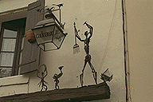

[ Aigues-Mortes（エーグモルト) ]
レストランLa Goulue

土産物屋のひさしのかざり
城壁を歩き回るとお腹もすきます。
そこで、レストランを物色。聖王ルイ広場の周りにはいっぱいレストランがあるが、どれも観光客相手の中途半端なところばかり。思い切って地元の人が行きそうなところを探してみることにした。で、見つけたのがLa Goulueという名のレストラン。町の中央に近いが、観光コースからはちょっと外れたところにる。（この店は「地球の歩き方」に載っていたことを、後日知りました。）
石作りのホールに客席が１０位。店に出ているのは、２０前後でプロヴァンスプリントのシャツをきた兄ちゃんが２、３人と、４０前後でちょっと渋めのおっちゃん、それからクロスワードパズルに余念がないがちゃんと客の勘定はつけていて、この店はまだおれがいなけりゃだめだといいたげなジイ様。かれらの会話のようすを聞いていると、どうも家族で経営していて、ジイ様は４０前後おやじに頭が上がらない様子。奥の厨房では、なかなかかっこいい兄さんが料理を作っていた。
結局、munu de tourismo（旅行者用定食、60FFなり）を頼んでしまったが、結構これがいけた。前菜は野菜サラダの盛り合わせ（レンズ豆、ニンジンのマリネ、ポテトサラダ、ゆで卵に大根（？）のマリネ）。いまでも、印象深いのはサフランソースをかけた白身魚の一品で、付け合わせにご飯がでてくるところがうれしい（カマルグ地方では米が栽培されており、私たちの訪れた頃は青々とした水田があちこちで見られた。形はジャポニカ米にちょっと似ているが、炊き方が違うのだろうか、ちょっと芯が残っている）。ソースが最高でした。デザートは洋梨のタルト。
ところが、食べ終わったところで事件。さて、お勘定と思い、おもむろにクレジットカードをオジさんに出したら、ここはカード、トラベラーズチェックをいっさい扱わない、とのこと。手持ちの現金が底をつき、そろそろ換金しなくちゃと思っていたところで、「ここまできて、すわ食逃げか?!」とあせっていたら、若い兄ちゃんが「近くに銀行があるからそこでおろしてきな」といっている。自分のカードの暗証番号を知らないだんなをおいて、にょーぼはそのニーチャンと銀行へ。プロヴァンスのお店は飲食店以外ランチタイムは完全休業なので銀行自体は閉まっているが、キャッシュディスペンサーというツヨイ味方がある。VISAのCD機をみつけ、無事現金で支払うことができた。
食事もおわり、広場の近くで開いていた画廊を冷やかしたり、ソレイヤードの店で土産を探していたり、セミの置物を探していたら、喉がかわいてカフェへ。さて、一休みしたところで、突然に雨が降ってきた。そんなに強い降りといったものでもないのだが、しとしとと降ってやまない。使い捨てのビニール傘は日本人の専売特許と思っていたが、そこはやはり観光地。土産物屋に入って折り畳みの傘を買ってしまった。これが、けっこう笑える傘。ワンタッチ傘ならぬ二段式。結構広がります。でも、使ったのは後にも先にもここだけだったかな？
エーグモルト市街図
| コンスタンス塔(tour de Constance) |
城壁・塔(tour)・門(porte) |
これは何でしょう？ |